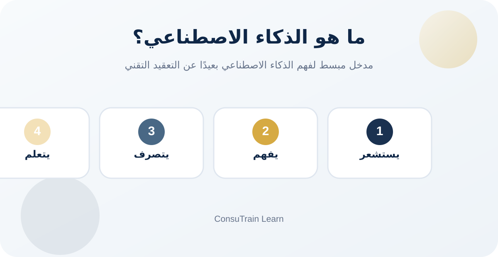

24 يونيو 2026 · الذكاء الاصطناعي والإدارة · وقت القراءة المتوقع: ...
كيف تنتقل المؤسسات من استخدام أدوات ذكاء اصطناعي متفرقة إلى منظومات عمل مترابطة تساعد في الأتمتة، الموارد البشرية، إدارة المشاريع، وإعداد المحتوى.

لم يعد استخدام الذكاء الاصطناعي في المؤسسات مقتصرًا على كتابة نص أو إنشاء صورة أو تلخيص اجتماع. الاتجاه الأكثر وضوحًا اليوم هو دمج الذكاء الاصطناعي داخل سير العمل اليومي، بحيث يساند الموظف في التخطيط، تنظيم البيانات، إعداد المحتوى، متابعة المهام، وأتمتة الإجراءات المتكررة.
خلال هذا الأسبوع، برزت عدة إشارات مهمة يمكن أن تستفيد منها المؤسسات والمديرون وفرق الموارد البشرية والتدريب.
1. تنسيق وكلاء الذكاء الاصطناعي بدل الاعتماد على أداة واحدة
أصبح الحديث يتجه نحو مفهوم تنسيق وكلاء الذكاء الاصطناعي؛ أي توزيع المهام بين عدة مساعدين ذكيين متخصصين، بدل تكليف أداة واحدة بكل شيء.
يمكن تصور ذلك داخل المؤسسة بالشكل التالي:
مساعد ذكي يستقبل الطلبات أو الرسائل.
مساعد آخر يصنفها حسب الموضوع أو الأولوية.
مساعد ثالث يعد مسودة الرد أو التقرير.
موظف أو مدير يراجع المخرجات قبل اتخاذ القرار أو الإرسال.
هذه الفكرة مهمة خصوصًا للمؤسسات التي لديها حجم كبير من الطلبات أو العمليات المتكررة، مثل خدمة العملاء، الموارد البشرية، متابعة المشاريع، التدريب، أو إدارة المعرفة.
التوصية الإدارية:
لا تبدأ المؤسسة ببناء عدة وكلاء ذكيين دفعة واحدة. الأفضل اختيار عملية واحدة واضحة ومتكررة، مثل استقبال طلبات التدريب أو متابعة استفسارات العملاء، ثم تجربة الأتمتة عليها وقياس النتائج.
2. أتمتة إجراءات الموارد البشرية وتهيئة الموظفين الجدد
من أبرز الاستخدامات العملية للذكاء الاصطناعي والأتمتة تنظيم عملية استقبال الموظف الجديد.
بدل أن يعتمد الانضمام الوظيفي على رسائل متفرقة وقوائم يدوية، يمكن تحويله إلى مسار واضح يبدأ بمجرد اعتماد الموظف، مثل:
إرسال رسالة ترحيب تلقائيًا.
مشاركة النماذج والسياسات المطلوبة.
إنشاء الحسابات والصلاحيات الأساسية.
جدولة التدريب الأولي.
إشعار المدير المباشر وفريق تقنية المعلومات.
متابعة استكمال متطلبات أول أسبوع عمل.
هذا لا يلغي الدور الإنساني للمدير أو فريق الموارد البشرية، لكنه يقلل النسيان والتأخير وتكرار الأعمال الإدارية.
فرصة تطبيقية للمؤسسات:
يمكن إعداد نموذج إلكتروني بسيط لطلب توظيف جديد، وربطه بسجل متابعة وخطة تهيئة تلقائية باستخدام Google Forms أو Tally وGoogle Sheets وn8n.
3. بناء تطبيقات داخلية دون الحاجة إلى تطوير برمجي معقد
تتطور أدوات إنشاء التطبيقات بالذكاء الاصطناعي بسرعة، وأصبحت تساعد المؤسسات على إعداد نماذج أولية أو أدوات داخلية من خلال وصف الاحتياج بلغة بسيطة.
من الأمثلة الممكنة:
نظام مبسط لتلقي طلبات الاستشارات.
لوحة متابعة للمشاريع والمبادرات.
سجل للمخاطر وفرص التحسين.
تطبيق داخلي لمتابعة التدريب والحضور.
نموذج رقمي لتقييم رضا المستفيدين.
قاعدة معرفة للسياسات والإجراءات.
لكن النجاح لا يعتمد على الأداة وحدها. يجب أن تبدأ المؤسسة بتحديد العملية، والمستخدمين، والبيانات المطلوبة، ومؤشرات النجاح، قبل بناء أي تطبيق.
التوصية الإدارية:
ابدأ بأداة داخلية صغيرة تحل مشكلة واقعية، بدل محاولة بناء نظام شامل منذ البداية.
4. أدوات تحويل الملاحظات إلى خطط عمل
ظهرت أيضًا أدوات تسعى لتحويل الملاحظات اليومية أو المذكرات الصوتية إلى مهام وخطة عمل منظمة.
هذا النوع من الأدوات يمكن أن يكون مفيدًا للمديرين، وقادة الفرق، ومديري المشاريع، خصوصًا عند وجود اجتماعات متعددة أو مهام موزعة بين فرق مختلفة.
القيمة الحقيقية ليست في تسجيل الملاحظات فقط، بل في تحويلها إلى:
مهام واضحة.
مسؤوليات محددة.
مواعيد متابعة.
تذكيرات.
نقاط تحتاج إلى قرار أو تصعيد.
ومع ذلك، تبقى المراجعة البشرية ضرورية، خصوصًا عندما تتعلق المهمة بقرار مالي أو إداري أو تواصل رسمي مع أطراف خارج المؤسسة.
5. الذكاء الاصطناعي في إعداد العروض والمحتوى المؤسسي
أصبحت أدوات التصميم والعروض التقديمية بالذكاء الاصطناعي أكثر قدرة على إعداد مسودات أولية للعروض، والمنشورات، والرسوم التوضيحية، مع الحفاظ على الهوية البصرية للمؤسسة.
يمكن أن تستفيد منها الفرق في:
إعداد عروض الإدارة العليا.
تلخيص نتائج الأداء.
تقديم المبادرات والمشاريع.
إعداد مواد تدريبية.
تصميم محتوى التواصل الداخلي.
تحويل التقارير الطويلة إلى عرض مختصر وواضح.
لكن ينبغي أن تظل الرسالة الإدارية، ودقة البيانات، والاعتمادات النهائية، تحت مسؤولية الإنسان.
الخلاصة
التحول الأهم ليس في استخدام أداة ذكاء اصطناعي جديدة كل أسبوع، بل في إعادة تصميم بعض العمليات الإدارية لتصبح أكثر وضوحًا وسرعة وقابلية للقياس.
المؤسسة الأكثر استفادة ليست التي تستخدم أكبر عدد من الأدوات، بل التي تستطيع الإجابة عن ثلاثة أسئلة:
ما العملية المتكررة التي تستهلك وقتًا كبيرًا؟
ما البيانات التي نحتاج إلى تنظيمها أو ربطها؟
أين يجب أن تبقى المراجعة والاعتمادات بيد الإنسان؟
ابدأ بمسار صغير، اختبره، قس أثره، ثم وسّعه تدريجيًا.
هل تريد تحويل هذه الأفكار إلى مسار عمل داخل مؤسستك؟
ابدأ بعملية واحدة متكررة، ثم اربط النموذج والبيانات والمتابعة والأتمتة ضمن تجربة صغيرة قابلة للقياس.